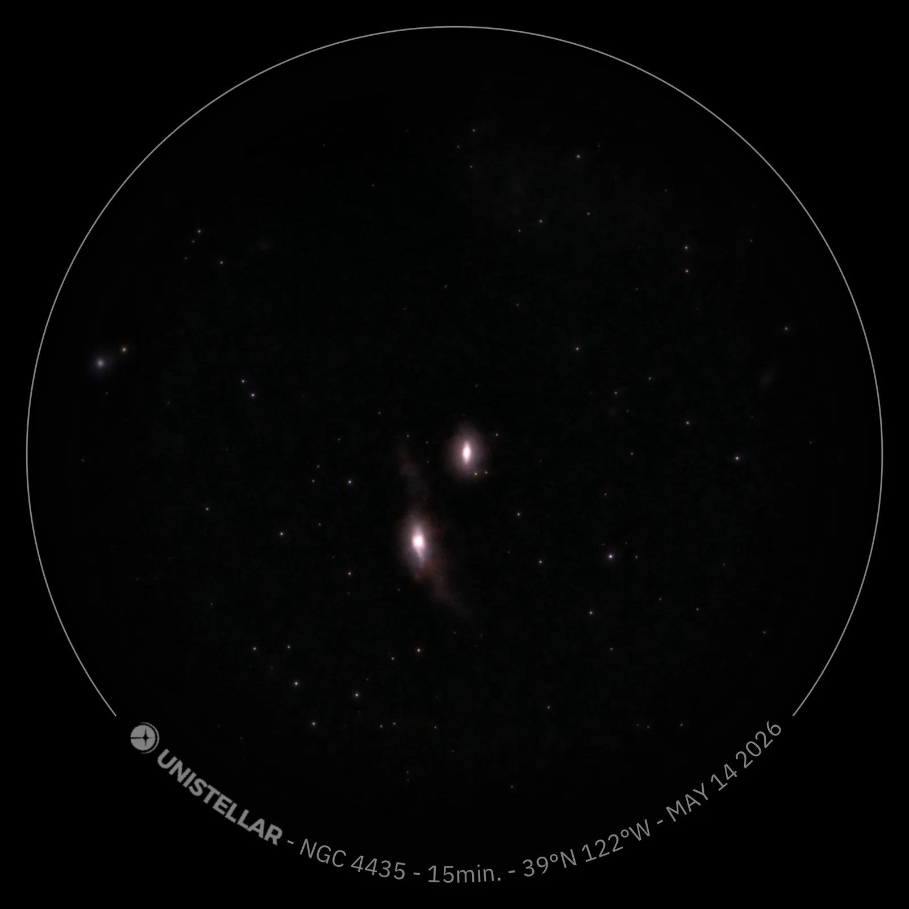
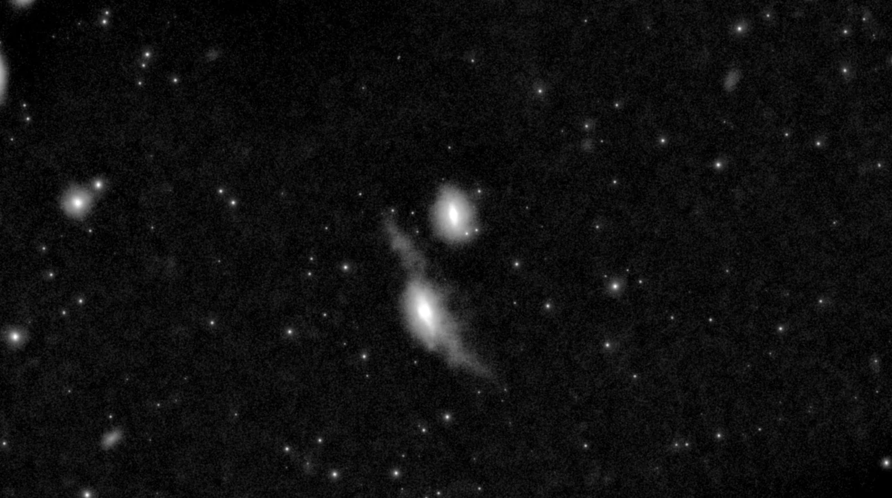
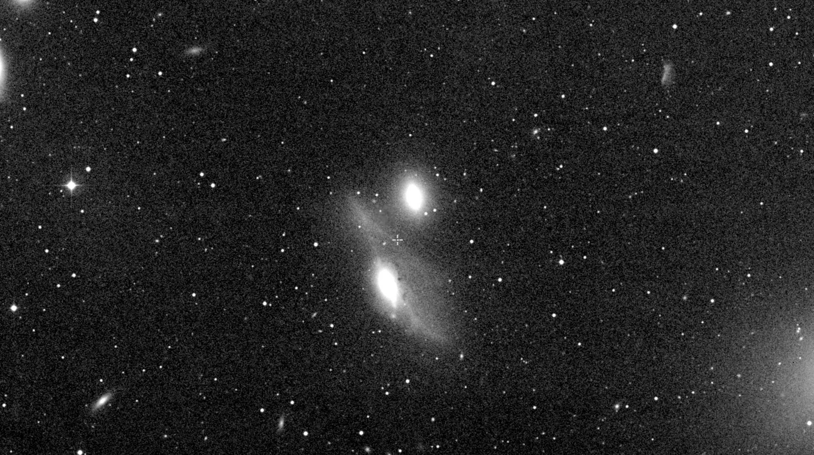

- Constellation
- Virgo
- Observed
- May 14, 2026
- Exposure
- 15 minutes, stacked
- Telescope
- Unistellar eVscope 2
No new star
No new star. Sixty stars matched the survey one for one.
Many faint smudges have no partner, but they are smeared, coloured or both, and sit at the level of the background noise. Nothing star-like is left over.
The blink
Drag the slider or press Blink to compare my frame with the survey.


Survey images: Digitized Sky Survey (DSS2 Red), Space Telescope Science Institute / NASA, from the Palomar Oschin and UK Schmidt telescopes; displayed through the CDS Aladin HiPS service.